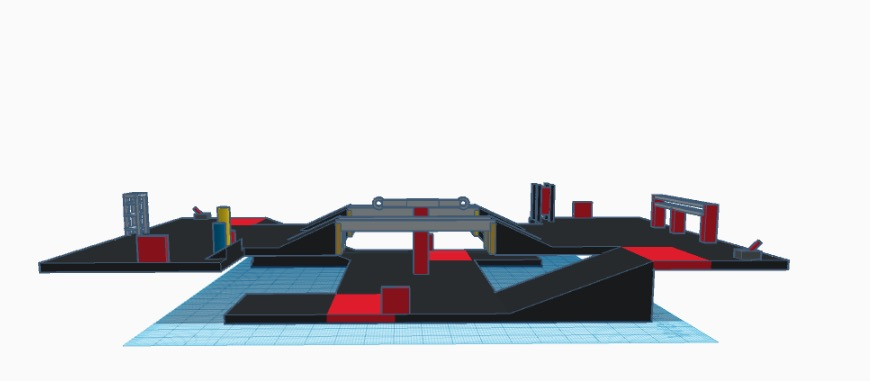

Ç'est Qoi?

Le jeu de la Compétition canadienne de robotique de cette année est Arcanum. Il aura lieu à L'école secondaire Curé-Antoine-Labelle.
Le But
Le but du jeu de cette année est de réparer les stations cassées d'un avion tout en travaillant aux côtés de 4 équipes.
Les règles
secteurs:
Les robots ont la possibilité de commencer dans l'une des six zones.
Points:
Collectez des points pour votre équipe en réparant des stations cassées sur le navire.
Supercharge:
Des points bonus sont attribués si le disjoncteur au milieu du terrain est incliné vers le suralimenté
partie du navire.
Niveaux:
Les dommages au navire viennent par vagues. Chaque équipe disposera de 5 minutes pour réparer et
terminer autant de
stations et vagues que possible dans le délai imparti.